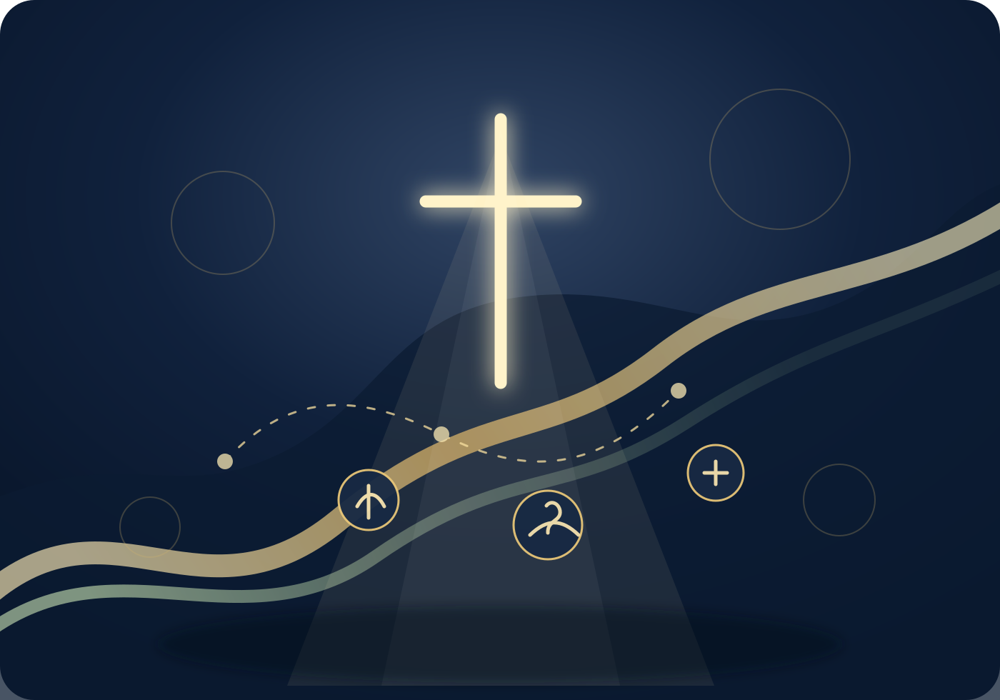

Christian
예수 그리스도의 복음을 중심으로 한 신앙과 사명
✝ 기독예술선교연합 플랫폼
주관·주최 | 아하바프레이즈선교회
CAMA는 아하바프레이즈선교회(C&MA 얼라이언스 한국총회 소속)가 주관·주최하는 기독예술선교연합 플랫폼으로, 예술을 통해 복음을 전하고 세대와 단체가 함께 하나님 나라의 문화를 세워가는 선교 공동체입니다.

찬양 · 무용 · 연극 · 미디어 · 비주얼아트
예배와 선교의 자리에서 하나님의 사랑을 전하는 예술선교 연합 네트워크
About CAMA
CAMA(카마)는 Christian Arts Mission Alliance의 약자로, “예술로 복음을, 연합으로 미래를”이라는 비전을 품은 기독예술선교연합 플랫폼입니다. 아하바프레이즈선교회(C&MA 얼라이언스 한국총회 소속)가 주관·주최하며, 행정 주최 단체로 함께합니다.
다양한 문화예술 사역자들이 하나님이 주신 창조적 재능을 나누며 예배와 선교의 자리에서 하나님의 사랑을 전합니다. CAMA는 한 사람의 재능이 아닌, 연합의 은혜로 완성되는 선교 플랫폼입니다.
예수 그리스도의 복음을 중심으로 한 신앙과 사명
무용, 음악, 연극, 미디어, 비주얼아트 등 창조적 표현을 통한 신앙 실천
하나님 사랑과 이웃 사랑을 실천하며 복음을 전파하는 사명
단체와 세대가 협력하여 선교적 비전을 함께 이루는 공동체적 연합

Vision
기독교적 진리와 현대 문화예술을 조화롭게 융합한 참여적 콘텐츠와 현장을 연구·지원하여 세상을 향한 복음과 선교, 예배와 섬김의 도구가 되도록 합니다.
“하나님이 세상을 이처럼 사랑하사…” 요한복음 3:16
부모세대와 자녀세대가 함께 예배하고, 예술로 복음을 전하는 예수문화세대를 세워가며 하나님의 창조질서와 문화회복의 사명을 이어갑니다.
“모든 것이 합력하여 선을 이루느니라.” 로마서 8:28
Ministry Direction
예술을 복음의 언어로 삼아 예배, 선교, 다음세대, 문화회복의 현장을 세워갑니다.
Mission through Arts
찬양, 무용, 연극, 영상, 디자인 등 다양한 창조적 도구를 통해 복음의 진리를 세상 속에 전합니다.
Generation & Ministry Alliance
교회, 단체, 예술가, 선교사들이 함께 협력하여 세대 간의 벽을 허물고 연합의 예배문화를 세웁니다.
Field Mission & Worship
지역과 세계 선교 현장 속에 예술사역팀을 파송하여 예배, 찬양, 공연, 미디어 사역으로 복음을 나눕니다.
Next Generation Ministry
청소년과 청년을 위한 예술선교 아카데미, 워크숍, 멘토링을 통해 예배하는 예술인, 선교하는 예배자를 세웁니다.
Cultural Restoration
하나님의 창조질서를 예술로 회복하며 세상 문화 속에서도 예수 그리스도의 아름다움과 거룩함을 드러냅니다.
History
문화선교 기획과 선교예배, 후원 콘서트, 다음세대 프로그램, 국내외 현장 사역을 이어왔습니다.
Featured Archive
탄자니아 샤론쉘터 위기모자가정·아동 공부방 후원을 위한 선교찬양제 아카이브입니다. 행사 포스터, 출연진, 프로그램, 후원 안내 자료를 홈페이지 안에서 함께 소개합니다.

이 행사는 탄자니아 샤론쉘터의 위기모자가정과 아이들을 위한 공부방 사역을 응원하고, 예술로 복음을 나누기 위해 마련된 CAMA Mission Praise 예배 및 찬양제입니다.
홈페이지에는 행사 포스터와 프로그램, 출연진 소개, 후원 안내, 운영진 자료를 아카이브 형태로 배치하여 CAMA의 실제 사역 현장과 선교의 결실을 보여줍니다.


Host & Partners
CAMA는 아하바프레이즈선교회가 주관·주최 및 행정 주최 단체로 함께하고, 다양한 교회·선교단체·예술단체·기업과 함께 예술선교의 현장을 만들어갑니다.
C&MA 얼라이언스 한국총회 소속 · CAMA 주관·주최